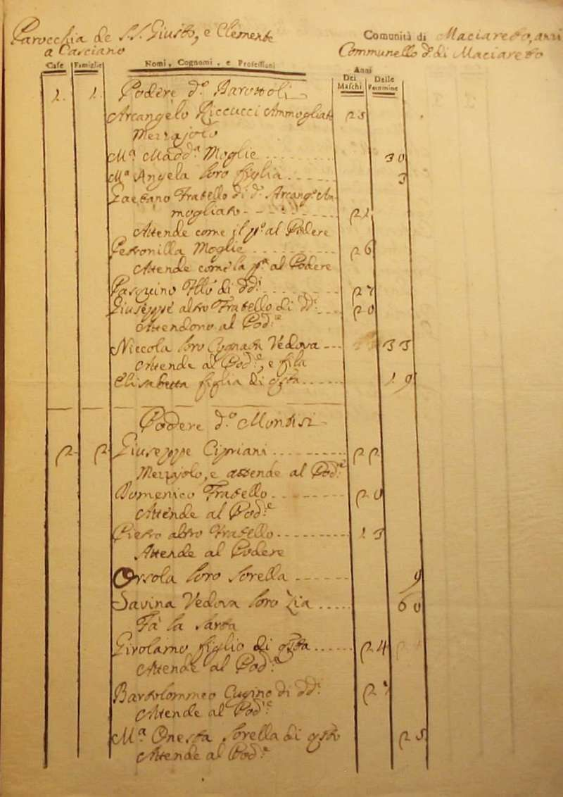
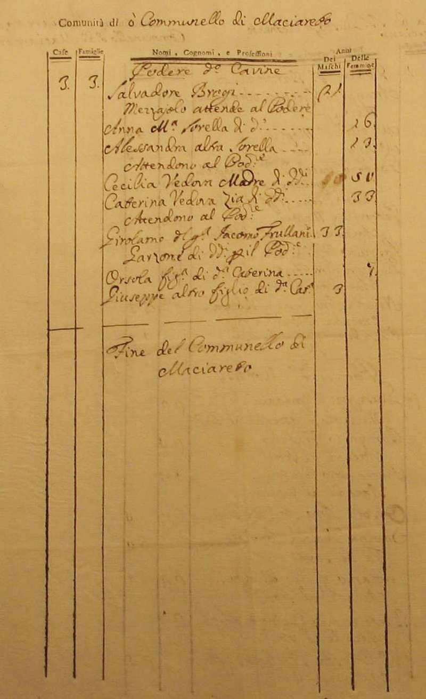

|
| Anno 1767 | |||
|
Ritorna all'indice delle parrocchie Il numero abbinato ad ogni famiglia indica la relativa posizione nello Stato delle Anime Comunità di Maciareto 1 - Riccucci Arcangelo - mezzaiolo 2 - Cipriani Giuseppe - mezzaiolo e attende al podere 3 - Brogi Salvadore - mezzaiolo e attende al podere   Ritorna all'indice delle parrocchie |